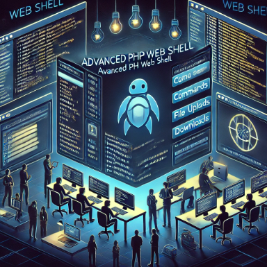
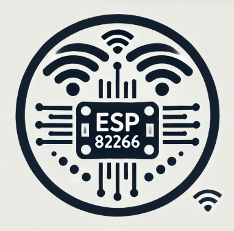
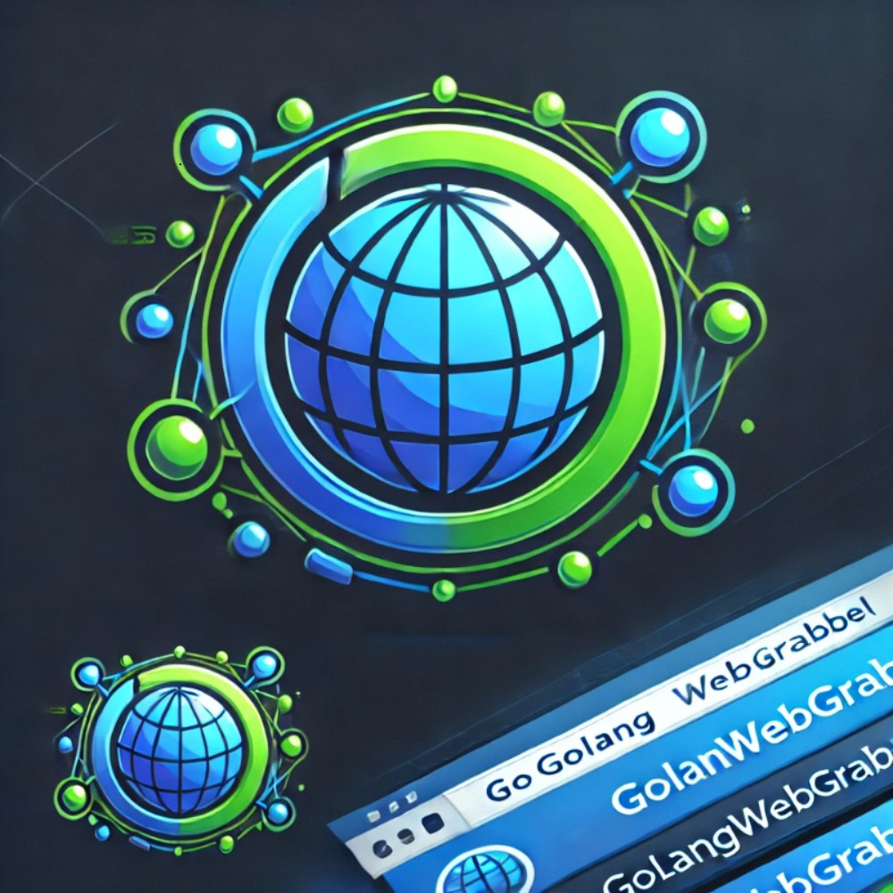

About me
cat About_Me.txt
My interest in cybersecurity began in a presentation I attended. The next day, I started researching, and I fell in love. I said, 'I want to learn more about cybersecurity,' and then I went down the rabbit hole. Since that day, my only goal has been to learn I am currently working on building a strong structure : What are firewalls, how do they work, basic scripting skills, network communication and protocol knowledge, operating systems, forensics, database knowledge, programming expertise, process knowledge, and types of attacks ... and much more than that
Technologies
ls -l Technologies/
C
C++
C#
Bootstrap
HTML5
CSS
Django
Linux
Java
git
githup
PHP
Postman
Docker
Javascript
Python
MS Sql
SQLite
Arduino
Assembly Language
My Write
Projects
ls -l Projects/
Web Shell
WirelessKey Monitor
ESP Twin Hack
GolangWebGrabber
FindAndSucceed
DrugKnowladge
My Studies
cat My_Studies.log #click me
-
HTTP Nedir? Nasıl Çalışır?
HTTP (Hypertext Transfer Protocol), internet üzerinden veri alışverişi sağlayan bir protokoldür. İstemci ile sunucu arasında talepler gönderilir ve cevaplar alınır.
-
Linux Sistemlerinde Adli Bilişim: Temel İnceleme Teknikleri ve Araçlar
Linux sistemlerinde adli bilişim incelemesi için kullanılan temel teknikler ve araçlar hakkında detaylı bir çalışma yaptım. Bu konu, dijital delillerin toplanması ve analizi için çok önemli.
-
Ağ Güvenliği: Firewall Konfigürasyonu ve Saldırı Tespiti
Firewall yapılandırması ve ağ saldırılarının tespiti konusunda derinlemesine bir araştırma yaptım. Bu çalışma, ağ güvenliği stratejilerini geliştirmeme yardımcı oldu.
-
Web Uygulama Güvenliği: OWASP Top 10 ve Güvenlik Açıklarının Giderilmesi
OWASP Top 10 listesindeki güvenlik açıklarını inceledim ve bunların nasıl giderileceği konusunda pratik yaptım. Bu çalışma, web uygulamalarının güvenliğini artırma konusunda çok faydalı oldu.
-
Kriptografi ve Veri Güvenliği
Kriptografi algoritmalarını inceleyerek veri güvenliğinin sağlanmasında kullanılan yöntemler üzerine bir çalışma gerçekleştirdim. Şifreleme ve kimlik doğrulama konuları üzerinde durdum.
-
HTTPS ile Güvenli Web Tabanlı İletişim
HTTPS, HTTP’nin güvenli versiyonudur. SSL/TLS kullanarak veri iletimini şifreler ve gizliliği sağlar.
-
TCP (Transmission Control Protocol) ve Veri İletimi
TCP, veri iletiminin güvenilir şekilde yapılmasını sağlayan bir protokoldür. Verilerin bölünmesi, gönderilmesi ve sıralı olarak yeniden birleştirilmesini sağlar.
-
UDP (User Datagram Protocol) Nedir? Kullanım Alanları
UDP, hızlı ancak güvenilir olmayan bir veri iletim protokolüdür. Genellikle video akışı, oyunlar ve DNS sorguları gibi hızın kritik olduğu durumlarda kullanılır.
-
DNS Nedir? Güvenlik Riskleri ve Çözüm Yolları
DNS (Domain Name System), alan adlarını IP adreslerine çeviren sistemdir. DNS Spoofing ve Cache Poisoning gibi saldırılara karşı DNSSEC gibi güvenlik önlemleri alınabilir.
-
Servis Nedir? Nasıl Çalışır? (Mail, FTP, vb. Bilinen Servisler)
Servisler, belirli bir ağ üzerinde çalışan yazılım hizmetleridir. Örneğin, Mail servisleri e-posta iletimini, FTP dosya transferini sağlar.
-
Port Nedir? Open, Closed, Filtered Gibi Durumlar Nelerdir?
Port, ağdaki servislerin dinlediği giriş noktasıdır. Open port, bir servisin aktif olduğunu, Closed port, servisin kapalı olduğunu ve Filtered port, trafiğin bir güvenlik duvarı ile filtrelendiğini gösterir.
-
Man-in-the-Middle (MitM) Saldırıları ve Korunma Yöntemleri
MitM saldırılarında saldırgan, iki taraf arasındaki iletişimi dinler veya değiştirir. HTTPS, VPN ve şifreleme yöntemleriyle bu tür saldırılara karşı korunulabilir.
-
Port Taramaları Nedir? Nasıl ve Neden Yapılır?
Port taramaları, bir sistemdeki açık portları ve bu portlarda çalışan servisleri tespit etmek için yapılır. Güvenlik açıklarını tespit etmek için kullanılır.
-
Brute Force Saldırıları ve Parola Güvenliği
Brute Force saldırıları, olası tüm parola kombinasyonlarını deneyerek hesaplara erişmeye çalışır. Güçlü parolalar ve iki faktörlü kimlik doğrulama bu saldırılara karşı koruma sağlar.
-
Phishing (Oltalama) Saldırıları: Nasıl Tespit Edilir?
Phishing saldırılarında, kullanıcıları kandırarak hassas bilgilerini elde etme amaçlanır. Şüpheli e-posta ve mesajlardan kaçınmak, bu tür saldırılara karşı korunmada önemlidir.
-
Firewall (Güvenlik Duvarı) Nedir?
Firewall, ağ trafiğini izleyip filtreleyerek yetkisiz erişimleri engelleyen bir güvenlik aracıdır.
-
VPN (Virtual Private Network) ile Güvenlik ve Gizlilik
VPN, internete şifreli bir tünel üzerinden bağlanarak gizliliği ve güvenliği artırır.
-
İki Faktörlü Kimlik Doğrulama (2FA) Nedir?
2FA, bir hesabın doğrulanması için iki farklı kimlik doğrulama yönteminin kullanılmasını sağlar. Bu, hesap güvenliğini önemli ölçüde artırır.
-
DDoS (Distributed Denial of Service) Saldırıları
DDoS saldırıları, bir sistemi veya ağı hizmet dışı bırakmak için çok sayıda talebin gönderildiği saldırılardır. Ağ trafiği izlenerek ve filtrelenerek bu saldırılara karşı korunulabilir.
-
SSH (Secure Shell) Nedir? Güvenli Bağlantılar
SSH, güvenli bir şekilde uzak sunuculara bağlanmayı sağlayan bir protokoldür. Verileri şifreleyerek bağlantıyı güvenli hale getirir.
-
Kötü Amaçlı Eklentiler ve Tarayıcı Güvenliği
Tarayıcı eklentileri bazen kötü amaçlı olabilir ve kullanıcıların verilerini çalabilir. Eklentiler yüklenirken dikkatli olunmalı ve güvenilir kaynaklardan indirilmelidir.
-
Güvenli Şifreleme Yöntemleri ve Hashing
Hashing, verilerin tek yönlü olarak şifrelenmesi işlemidir. MD5, SHA-256 gibi algoritmalar kullanılarak şifreler korunur.
-
Sosyal Mühendislik Saldırıları ve Bilinçli Kullanıcı Olmak
Sosyal mühendislik saldırıları, kullanıcıları kandırarak bilgi elde etme yöntemidir. Kullanıcıların bu tür saldırılara karşı dikkatli olmaları ve bilinçli hareket etmeleri önemlidir.
-
SSL/TLS Sertifikaları Nedir? Nasıl Çalışır?
SSL ve TLS, internet üzerinden güvenli veri iletimi sağlamak için kullanılan protokollerdir. Sertifikalar, sitelerin kimliğini doğrulamak ve şifreleme sağlamak için kullanılır.
-
İşletim Sistemi Nedir? Nasıl Çalışır? Kullanıcı Hakları ve Dosya Hakları Nelerdir?
İşletim sistemi, donanım ile kullanıcı arasındaki etkileşimi yöneten yazılımdır. Kullanıcı ve dosya hakları, dosyalara kimlerin erişebileceğini belirler.
-
Aircrack-ng Nedir? Ne İşe Yarar?
Aircrack-ng, kablosuz ağların güvenlik testlerinde kullanılan bir araçtır. Ağlardaki şifreleme açıklarını tespit etmeye yarar.
-
FTP ve Man-in-the-Middle (MitM) Saldırıları
FTP üzerinden yapılan veri iletimleri şifrelenmemiş olabilir ve bu durum MitM saldırılarına açık hale getirir. SFTP gibi güvenli protokoller kullanılmalıdır.
-
Web Nedir? Nasıl Çalışır?
Web, internet üzerindeki bilgi paylaşım platformudur. Tarayıcılar aracılığıyla web sitelerine erişim sağlanır ve HTTP/HTTPS protokolleri üzerinden veri iletimi yapılır.
-
QUIC Protokolü Nedir?
QUIC, Google tarafından geliştirilen bir protokoldür ve TCP yerine UDP tabanlıdır. Hızlı ve güvenilir internet bağlantıları sağlar.
-
Web Application Firewall (WAF) Nedir?
QUIC, Google tarafından geliştirilen bir protokoldür ve TCP yerine UDP tabanlıdır. Hızlı ve güvenilir internet bağlantıları sağlar.
-
MITRE ATT&CK Nedir?
QUIC, Google tarafından geliştirilen bir protokoldür ve TCP yerine UDP tabanlıdır. Hızlı ve güvenilir internet bağlantıları sağlar.
-
Advanced Burp Suite Kullanımı
QUIC, Google tarafından geliştirilen bir protokoldür ve TCP yerine UDP tabanlıdır. Hızlı ve güvenilir internet bağlantıları sağlar.
-
WAF Bypass Teknikleri
QUIC, Google tarafından geliştirilen bir protokoldür ve TCP yerine UDP tabanlıdır. Hızlı ve güvenilir internet bağlantıları sağlar.
-
HTTP Request Splitting Nedir?
QUIC, Google tarafından geliştirilen bir protokoldür ve TCP yerine UDP tabanlıdır. Hızlı ve güvenilir internet bağlantıları sağlar.
-
Remote Code Execution (RCE) Nedir?
QUIC, Google tarafından geliştirilen bir protokoldür ve TCP yerine UDP tabanlıdır. Hızlı ve güvenilir internet bağlantıları sağlar.
-
Cookie Güvenliği
QUIC, Google tarafından geliştirilen bir protokoldür ve TCP yerine UDP tabanlıdır. Hızlı ve güvenilir internet bağlantıları sağlar.
-
Web Shell Saldırıları
QUIC, Google tarafından geliştirilen bir protokoldür ve TCP yerine UDP tabanlıdır. Hızlı ve güvenilir internet bağlantıları sağlar.
-
OSI Katmanı: Layer 1 ve Layer 2
QUIC, Google tarafından geliştirilen bir protokoldür ve TCP yerine UDP tabanlıdır. Hızlı ve güvenilir internet bağlantıları sağlar.
-
Penetrasyon Testi Metodolojileri
QUIC, Google tarafından geliştirilen bir protokoldür ve TCP yerine UDP tabanlıdır. Hızlı ve güvenilir internet bağlantıları sağlar.
-
OSI Katmanı: Layer 4
QUIC, Google tarafından geliştirilen bir protokoldür ve TCP yerine UDP tabanlıdır. Hızlı ve güvenilir internet bağlantıları sağlar.
-
Content Security Policy (CSP) Nedir?
QUIC, Google tarafından geliştirilen bir protokoldür ve TCP yerine UDP tabanlıdır. Hızlı ve güvenilir internet bağlantıları sağlar.
-
Cross-Origin Resource Sharing (CORS) Nedir?
QUIC, Google tarafından geliştirilen bir protokoldür ve TCP yerine UDP tabanlıdır. Hızlı ve güvenilir internet bağlantıları sağlar.
-
Same-Origin Policy Nedir?
QUIC, Google tarafından geliştirilen bir protokoldür ve TCP yerine UDP tabanlıdır. Hızlı ve güvenilir internet bağlantıları sağlar.